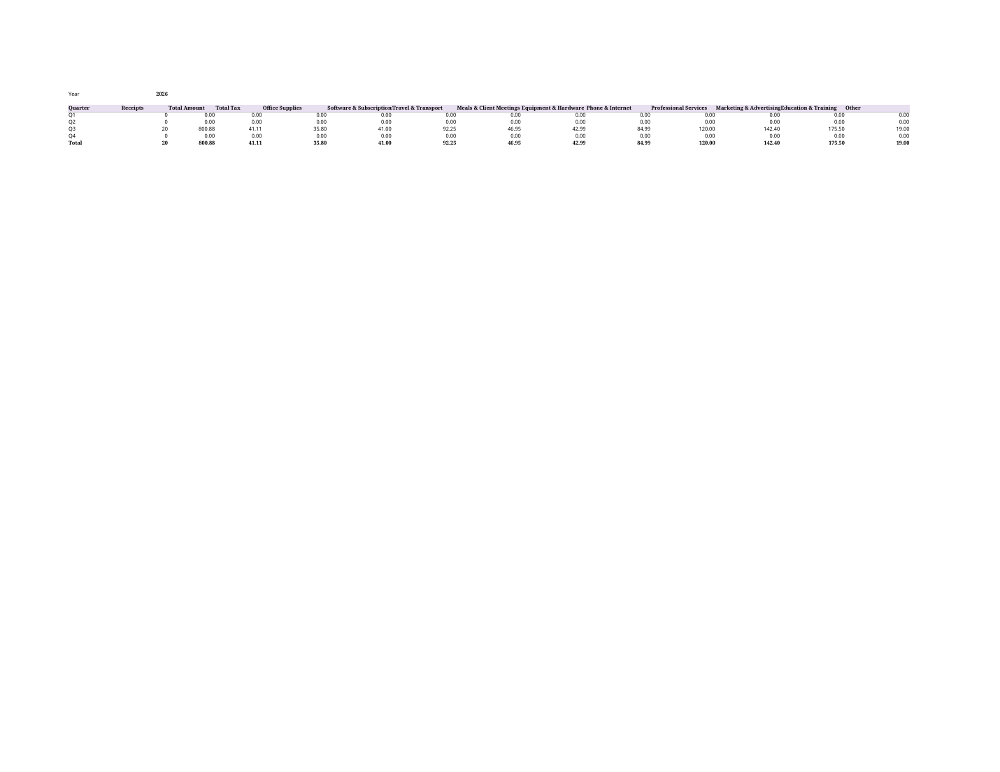

Stop retyping receipts every quarter. Log each receipt in 2 minutes, keep the photo in one folder, and get your quarterly totals automatically.
$29 one-time
Receipts pile up in a shoebox, a drawer, or a camera roll, and every quarter you sit down and retype them all from scratch. That session is slow, easy to get wrong, and the reason expenses get reported late — or never.

24 files: 11 workbooks (EN, ZH, FR, ES, AR right-to-left, RU, DE, JA, PT, HI, IT) with 5 sheets each (START, CATEGORIES, RECEIPT-LOG with 200 rows, QUARTER-SUMMARY, YEAR-DASHBOARD), a free sample workbook with a full fictional quarter (20 receipts) filled in, a quick-start guide, a worked example with every total checkable (20 receipts, 800.88 total, 41.11 tax), 10 FAQs, and an honest limits note.
Try the free sample: Free sample workbook